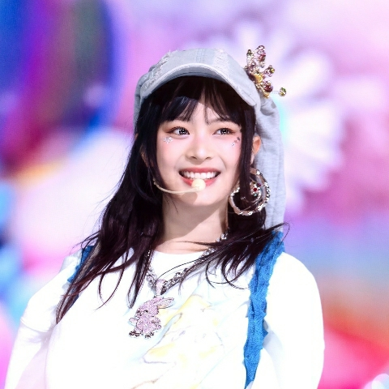
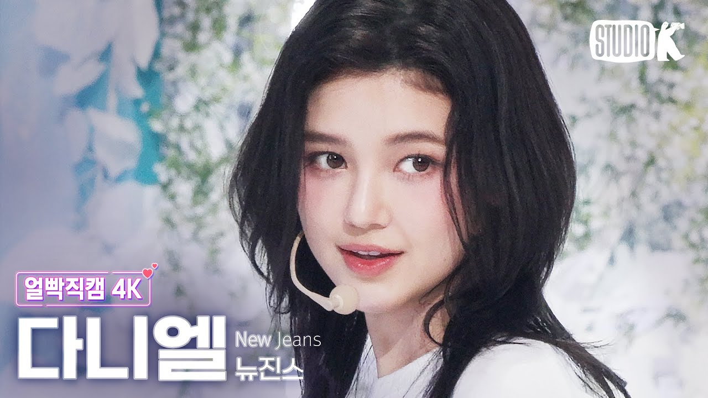

| Member | Details |
|---|---|
| 1. Minji |
Kim Min-ji (Korean: 김민지; born May 7, 2004), known mononymously as Minji, is a South Korean singer and dancer. Minji holds the positions of leader, vocalist, dancer, and visual in NewJeans. As the leader, she is responsible for guiding and representing the group. Her striking appearance and charm contribute to her role as the visual. Her dancing skills and vocal abilities also play a significant role in the group's dynamic performances and overall appeal. |
| 2. Hanni  |
Phạm Ngọc Hân (Vietnamese: Phạm Ngọc Hân; born October 6, 2004), known professionally as Hanni, is a Vietnamese-Australian singer and dancer. Hanni holds the positions of vocalist, and dancer in NewJeans. She is known for her exceptional dance skills, often taking center stage during dance performances, as well as her vocal prowess, contributing significantly to the group's dynamic performances and overall musical style. |
| 3. Danielle  |
Danielle Marsh (born April 11, 2005), known mononymously as Danielle, is an Australian-Korean singer and dancer. She is noted for her mature and clear voice, which features a wide vocal range and tonal diversity. Danielle effectively uses both calm low tones and powerful high tones. While her mid-to-high range sounds bright and pure, her low tones give off a chic impression. She also stands out for her unique groove and vocal potential. |
| 4. Haerin |
Kang Haerin (Korean: 강해린; born May 15, 2006), known mononymously as Haerin, is a South Korean singer and dancer. Haerin has an attractive, unique voice that stands out with its delicate, jade-like tone, exuding a sense of melancholy and tenderness. She occasionally showcases a slightly husky and boyish tone, which she handles just as charmingly despite being the complete opposite. In dance tracks, she presents a somewhat chic and highly refreshing vocal tone. In "Hype Boy," she took on the chorus part, effectively capturing a strong sense of refreshment. In "OMG," she maximizes her chic vocal tone, creating a killing part in the song. Haerin handled the chorus parts in all three title tracks of their debut album. |
| 5. Hyein |
Lee Hyein (Korean: 이혜인; born April 21, 2008), known mononymously as Hyein, is a South Korean singer and dancer. Hyein has a unique and weighty yet clear tone, with a voice that conveys deep emotions despite her young age, captivating listeners instantly. She brings out the group's distinct R&B and hip-hop style exceptionally well. She has remarkably accurate pitch and an excellent sense of tone and pitch. Each encore stage showcases her stable live performance and vocal power, receiving positive reactions. Her vocal range is notably wide. In the lower register, she produces a rich and clear voice, while in the higher register, she delivers a clear, pure, and profound voice. She highlights the characteristics of a song while infusing it with her unique charm, creating an attractive and distinctive vocal performance. In the debut album New Jeans, she handled the intro for three of the four songs, excluding 'Hype Boy.' She garnered attention for both her tone and vocal ability by flawlessly handling the iconic humming parts in the intro and outro of 'Ditto,' as well as the challenging and emotionally intense sections of the song. |